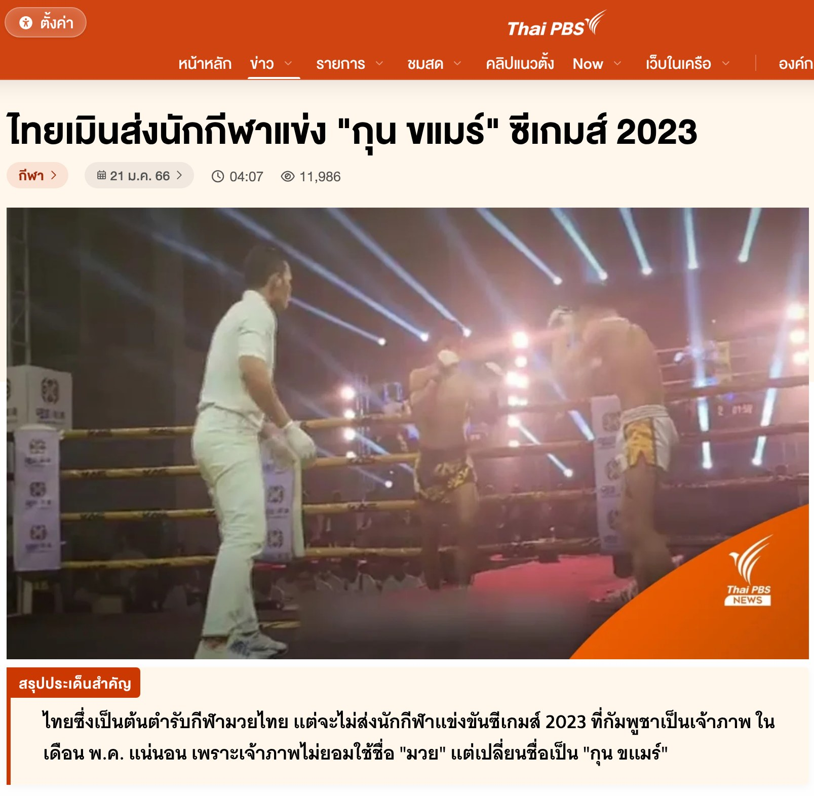
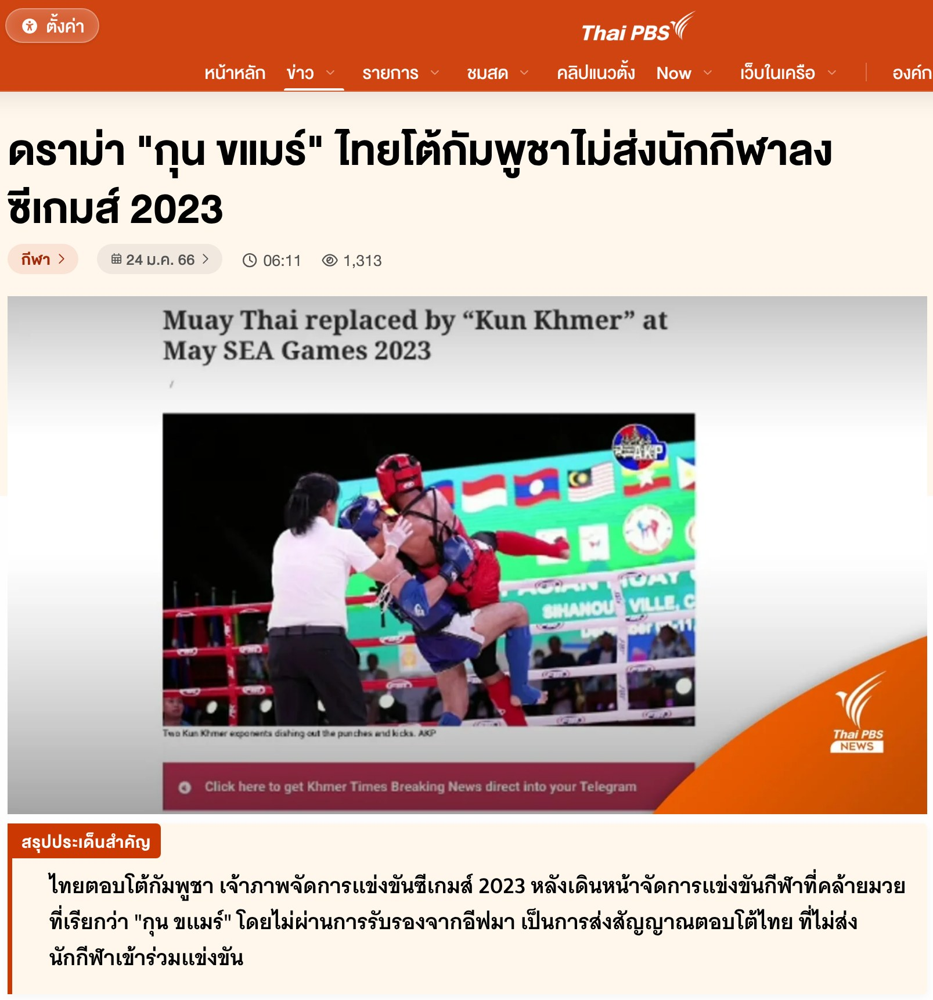
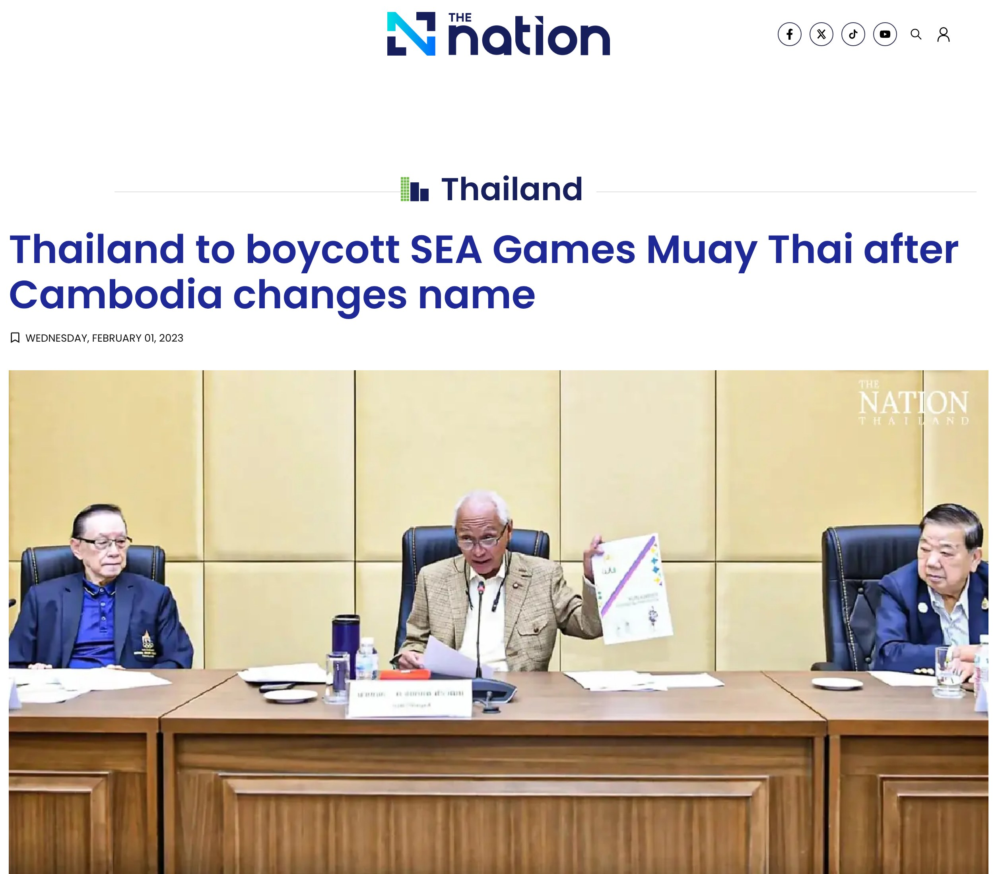

มวยไทยและกุน ขแมร์เติบโตจากรากศิลปะการต่อสู้ร่วมของภูมิภาค ยอมรับได้ว่า “คล้ายกัน แต่แต่ละชาติมีเอกลักษณ์ของตน” โดยไม่ต้องเป็นของใครคนเดียว
ในเวทีนานาชาติใช้ชื่อกลาง เช่น “มวย (Muay)” ตามกติกาสหพันธ์ซีเกมส์ หรือใช้ชื่อคู่ “Muay / Kun Khmer” ส่วนในประเทศของตนแต่ละชาติเรียกตามภาษาตนได้
ให้สหพันธ์ซีเกมส์ OCA หรือกลไกอาเซียนเป็นคนกลาง กำหนดหลักเกณฑ์การตั้งชื่อกีฬาพื้นบ้านให้ชัดเจน ก่อนที่เจ้าภาพจะประกาศรายการแข่งขัน
เลิกใช้คำเหยียดและการเหมารวม ตรวจสอบข้อเท็จจริงก่อนแชร์ และให้หน่วยงานกีฬาของทั้งสองประเทศออกแถลงการณ์ร่วมเพื่อลดกระแสความเกลียดชัง
จัดไฟต์มิตรภาพ วิจัยประวัติศาสตร์ร่วม ค่ายเยาวชน และเสนอยูเนสโกแบบหลายประเทศ เหมือน “เคบายา” (Kebaya) ที่ 5 ชาติอาเซียนรวมถึงไทยเสนอร่วมกันจนได้ขึ้นทะเบียนเมื่อปี 2567
เปิดใจรับฟังมุมมองอีกฝ่าย เคารพความแตกต่าง คิดก่อนคอมเมนต์ และช่วยแชร์ข้อมูลที่ถูกต้อง แทนการผลิตซ้ำถ้อยคำที่สร้างความเกลียดชัง
ทางออกที่ยั่งยืนคือการร่วมมือบนพื้นฐานของความเคารพ และการยอมรับว่าไทยกับกัมพูชาต่างมีรากวัฒนธรรมร่วมกัน วัฒนธรรมจึงควรเป็นสะพานเชื่อมเพื่อนบ้าน ไม่ใช่สนามรบ